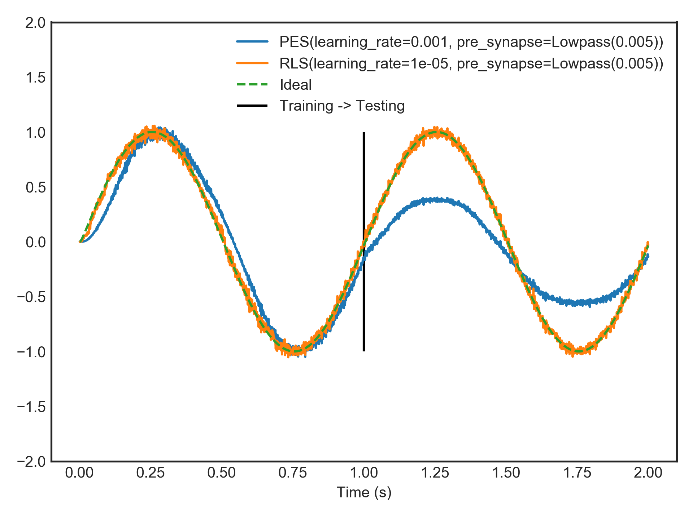

nengolib.learning.RLS¶
-
class
nengolib.learning.RLS(learning_rate=1.0, pre_synapse=Lowpass(0.005))[source]¶ Recursive least-squares rule for online decoder optimization.
This may be used to learn the weights on a
nengo.Connection, online, in an L2-optimal manner. To be applied in the same scenarios asnengo.PES, to minimize some error signal.In the end, the only real difference between RLS learning and using the
nengo.solvers.LstsqL2solver, is when the learning takes place. In the former case, the weights are learned online from an error signal over time, whereas in the latter case, the weights are learned offline in a batch optimization from the provided training data (eval_pointsandfunction).The cost of RLS is \(\mathcal{O}\left(n^2\right)\) extra time and memory. It is typically much more efficient to do the learning offline using the
nengo.solvers.LstsqL2solver.Parameters: - learning_rate :
float, optional Effective learning rate. This is better understood as \(\frac{1}{\alpha}\), where \(\alpha\) is an L2-regularization term. A large learning rate means little regularization, which implies quick over-fitting. A small learning rate means large regularization, which translates to slower learning. Defaults to 1.0. [1]
- pre_synapse :
nengo.synapses.Synapse, optional Filter applied to the pre-synaptic neural activities, for the purpose of applying the weight update. Defaults to a
nengo.Lowpassfilter with a time-constant of 5 ms.
See also
Notes
RLS works by maintaining the inverse neural correlation matrix, \(\Gamma^{-1}\), where \(\Gamma = A^T A + \alpha I\) are the regularized correlations, \(A\) is a matrix of (possibly filtered) neural activities, and \(\alpha\) is an L2-regularization term controlled by the
learning_rate. This matrix is used to project the error signal and update the weights to be L2-optimal, at each time-step.The time-step does not play a role in this learning rule, apart from determining the time-scale over which the
pre_synapseis discretized. A complete learning update is applied on every time-step.Attributes that can be probed from this learning rule:
pre_filtered,error,delta,inv_gamma.References
[1] Sussillo, D., & Abbott, L. F. (2009). Generating coherent patterns of activity from chaotic neural networks. Neuron, 63(4), 544-557. Examples
See full-FORCE and “Classic FORCE” learning with spikes for an example of how to use RLS to learn spiking FORCE [1] and “full-FORCE” networks in Nengo.
Below, we compare
nengo.PESagainstRLS, learning a feed-forward communication channel (identity function), online, and starting with 100 spiking LIF neurons from scratch (zero weights). A faster learning rate fornengo.PESresults in over-fitting to the most recent online example, while a slower learning rate does not learn quickly enough. This is a general problem with greedy optimization.RLSperforms better since it is L2-optimal.>>> from nengolib import RLS, Network >>> import nengo >>> from nengo import PES >>> tau = 0.005 >>> learning_rules = (PES(learning_rate=1e-3, pre_tau=tau), >>> RLS(learning_rate=1e-5, pre_synapse=tau))
>>> with Network() as model: >>> u = nengo.Node(output=lambda t: np.sin(2*np.pi*t)) >>> probes = [] >>> for lr in learning_rules: >>> e = nengo.Node(size_in=1, >>> output=lambda t, e: e if t < 1 else 0) >>> x = nengo.Ensemble(100, 1, seed=0) >>> y = nengo.Node(size_in=1) >>> >>> nengo.Connection(u, e, synapse=None, transform=-1) >>> nengo.Connection(u, x, synapse=None) >>> conn = nengo.Connection( >>> x, y, synapse=None, learning_rule_type=lr, >>> function=lambda _: 0) >>> nengo.Connection(y, e, synapse=None) >>> nengo.Connection(e, conn.learning_rule, synapse=tau) >>> probes.append(nengo.Probe(y, synapse=tau)) >>> probes.append(nengo.Probe(u, synapse=tau))
>>> with nengo.Simulator(model) as sim: >>> sim.run(2.0)
>>> import matplotlib.pyplot as plt >>> plt.plot(sim.trange(), sim.data[probes[0]], >>> label=str(learning_rules[0])) >>> plt.plot(sim.trange(), sim.data[probes[1]], >>> label=str(learning_rules[1])) >>> plt.plot(sim.trange(), sim.data[probes[2]], >>> label="Ideal", linestyle='--') >>> plt.vlines([1], -1, 1, label="Training -> Testing") >>> plt.ylim(-2, 2) >>> plt.legend(loc='upper right') >>> plt.xlabel("Time (s)") >>> plt.show()
Attributes: - learning_rate
A parameter where the value is a number.
- pre_synapse
- size_in
- learning_rate :